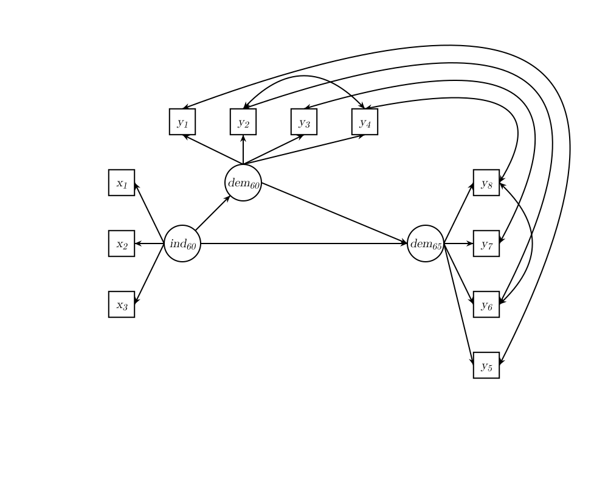
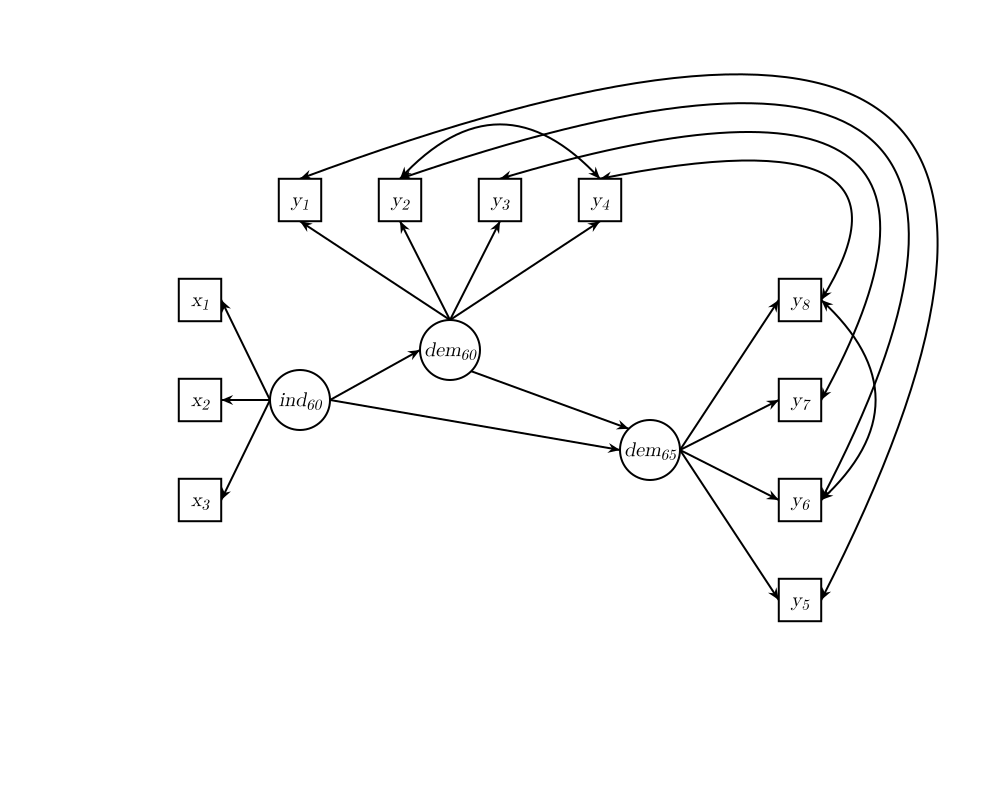

| lav_plot {lavaan} | R Documentation |
Creates code to make a diagram in tikz or svg or plot the diagram or store the diagram in a png file.
lav_plot(model = NULL,
infile = NULL,
varlv = FALSE,
placenodes = NULL,
edgelabelsbelow = NULL,
group.covar.indicators = FALSE,
common.opts = list(sloped.labels = TRUE,
mlovcolors = c("lightgreen", "lightblue"),
italic = TRUE,
lightness = 1,
auto.subscript = TRUE),
rplot = list(outfile = "",
addgrid = TRUE),
tikz = list(outfile = "",
cex = 1.3,
standalone = FALSE),
svg = list(outfile = "",
stroke.width = 2L,
font.size = 20L,
idx.font.size = 15L,
dy = 5L,
font.family = "Latin Modern Math, arial, Aerial, sans",
standalone = FALSE)
)
model |
A character vector specifying the model in lavaan syntax or a list
(or data.frame) with at least members lhs, op, rhs, label and fixed or a fitted
lavaan object (in which case the |
infile |
A character string specifying the file which contains the model syntax. |
varlv |
A logical indicating that the (residual) variance of a variable should be plotted as a separate latent variable (with a smaller circle then ordinary latent variables). In this case covariances between two such variables will be plotted as covariance between the latent variables for the variance. |
placenodes |
optional list with members |
edgelabelsbelow |
optional list with members |
group.covar.indicators |
logical, should items with indicators which have an explicit covariance link be placed in the same group, i.e. forced to be on the same side of the diagram? |
common.opts |
options common to the three types of generated plots. |
rplot |
options for creating Rplot,
see |
tikz |
options for creating code for tikz plot,
see |
svg |
options for creating code for svg plot,
see |
If rplot is specified or neither tikz nor svg are specified
an R plot is generated, possibly stored in a png file if the outfile member of
rplot is set. If tikz is specified the code for a tikz diagram is
stored in the specified outfile, and the same for svg.
The lav_plot command tries to create a nice plot from the input model,
but one should keep the names of the variables short and sometimes rearrange the
nodes in the plot. As an example the (slightly modified) example of the
sem function in lavaan results in the following first plot
hereunder. If we use the placenodes argument, we get the second plot.


More details on the parameters can be found in the help for
the lav_... functions.
NULL, invisible
lav_model_plotinfo, lav_plotinfo_positions,
lav_plotinfo_rgraph, lav_plotinfo_tikzcode,
lav_plotinfo_svgcode
model <- 'alpha11 =~ 1 * x1 + x2 + x3 # latent variable
alpha12 <~ x4 + x5 + x6 # composite
gamma =~ 1 * x7 + x8 + x9 # latent variable
xi =~ 1 * x10 + x11 + x12 + x13 # latent variable
x1 ~~ x3
x2 ~~ epsilon2 * x2
x12 ~~ epsilon12 * x12
x4 ~~ epsilon4 * x4
x7 ~~ x9
x10 ~~ x11 + x13
gamma ~~ 0.7 * xi
# regressions
xi ~ v * alpha11 + t * alpha12 + 1
alpha11 ~ yy * Theta1 + tt1 * 0.12 * alpha12 + ss * gamma
Theta1 ~~ alpha12
'
lav_plot(model)
lav_plot(model,
placenodes=list(Theta_1 = c(2, 2.5)),
tikz = list(outfile=stdout()))
modelml <- '
level: 1
fw =~ y_1 + y_2 + y_3 + y_4
level: 2
fb =~ y_1 + y_2 + y_3 + y_5
y_2 ~~ cv24 * y_5
'
tikzcodeml <- lav_plot(modelml,
common.opts = list(auto.subscript = FALSE),
svg = list(outfile=stdout())
)
## Not run:
# example creating tex file with the above models
zz <- file("testtikz.tex", open="w")
writeLines(c(
'\documentclass{article}',
'\usepackage{amsmath, amssymb}',
'\usepackage{amsfonts}',
'\usepackage[utf8]{inputenc}',
'\usepackage[english]{babel}',
'\usepackage{xcolor}',
'\usepackage{color}',
'\usepackage{tikz}',
'\usetikzlibrary {shapes.geometric}',
'\begin{document}'),
zz)
lav_plot(model,
tikz = list(outfile = "tmp.tex")
)
tmp <- readLines("tmp.tex")
writeLines(tmp, zz)
writeLines(" ", zz)
lav_plot(modelml,
common.opts = list(sloped.labels = FALSE,
mlovcolors = c("lightgreen", "lightblue")),
tikz = list(outfile = "tmp.tex", cex = 1.4)
)
tmp <- readLines("tmp.tex")
writeLines(tmp, zz)
writeLines("\end{document}", zz)
close(zz)
openPDF <- function(f) {
os <- .Platform$OS.type
if (os=="windows")
shell.exec(normalizePath(f))
else {
pdf <- getOption("pdfviewer", default='')
if (nchar(pdf)==0)
stop("The 'pdfviewer' option is not set. Use options(pdfviewer=...)")
system2(pdf, args=c(f))
}
}
tools::texi2dvi("testtikz.tex", pdf = TRUE, clean = TRUE)
openPDF("testtikz.pdf")
# example creating html file with the above diagrams
zz <- file("demosvg.html", open="w")
writeLines(c(
'<!DOCTYPE html>',
'<html>',
'<body>',
'<h2>SVG diagrams created by lav_plot R package</h2>'),
zz)
lav_plot(model,
svg = list(outfile = "temp.svg")
)
tmp <- readLines("tmp.svg")
writeLines(tmp, zz)
writeLines("<br />", zz)
lav_plot(modelml,
common.opts = list(sloped.labels = FALSE),
tikz = list(outfile = "tmp.svg")
)
tmp <- readLines("tmp.svg")
writeLines(tmp, zz)
writeLines(c("</body>", "</html>"), zz)
close(zz)
browseURL("demosvg.html")
## End(Not run)